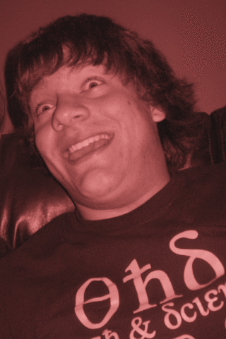

Mackenzie CapleOnce upon a time there was a girl who was bored and didn't want to write a lab report. Instead, she decided to go on an adventure. Luckily for her, at that very moment her desk vanished, and in its place stood a shimmering blue portal.She walked through it, and found herself in the top of a tall tree. Below her as far as she could see was a thick tangle of branches, and above her, nothing but vast blue sky and the relentless rays of two giant suns. Because of the twin suns, the girl realized that the portal had taken her to a sci-fi adventure, not a fantasy adventure. She checked her belt, and sure enough there was a ray gun holstered there. She also noticed something large and heavy strapped to her back, and figured it must be a jetpack. Indeed it was. She powered it up, and flew away, only accidentally setting fire to the forest a little bit. She flew over the forest for a while, and pretty soon all the flips she did were intentional ones. Then, just as she was starting to get tired of flying, she saw a clearing in the forest. In it was a small village, which just then was being attacked by space pirates! The girl pulled out her ray gun and came to the rescue. She flew in close, and shot out the engines of the space pirates' ship. It immediately began to spiral out of control. Miraculously it missed the village, and crash landed into the incredibly strong upper boughs of some nearby trees. The space pirates thought that this was pretty awesome, and so immediately changed their ways and became a group of peaceful tree-dwellers. Meanwhile, the girl landed in the village where she was lauded as a hero. "We owe you a Great Debt," the villagers said, creepily enough, in unison. "We will either make you a portal to get back home, or you can stay with us forever and be our leader." The girl was going to choose to go home, but then remembered the lab report she had left behind. So, she lived happily ever after, ruling the village with an iron fist. the end. |

Anthony SottileAnthony has been described as a bit of a strange man. His eating habits include feasting primarily on babies (of plants, he is a vegetarian).When he is not sleeping or masticating, he can be found voraciously ripping through select math, chemistry, and biology material, which he prefers over the inferior humanities. Some of his hobbies include programming, constructing websites, downhill ski racing, and baseball. His favorite chemical reactions include ozonolysis and Grignard reactions (OMg!!!!) His favorite compounds are benzene derivative. His favorite acid is SbF5*HF which has a pKa of -25 and is strong enough to protonate an sp3 carbon. |